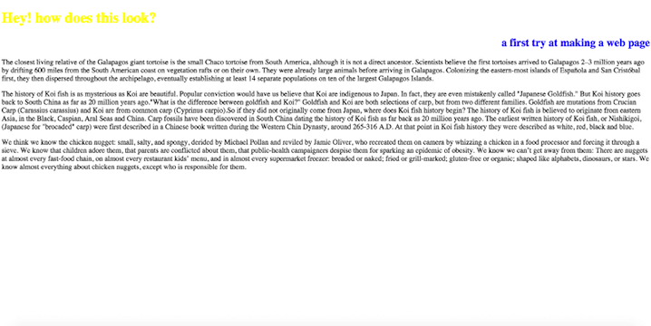

My name is Matilda. I grew up in Minneapolis MN, and now i live in California. Its been a lot of changes for me. I have a whole new life, a new house and new friends. Right now im trying to focus my efforts on staying happy, and doing joyfull things everyday. so far its working out pretty well :) christmas is in a few days, so everything is being prepped. We made a paper tree and hung some lights. I got all of sorens presants wrapped, and im pupped up for christmas! This is also my first holiday away from home. I don't really miss my family, but its another change to get used too. Now Soren is my family, and hes the only family i ever want.
I have made two very basic webpages using treehouse. The image below, and the one you see now are my very first!
Using Jennifers handy list, I will continue to add to my html css skills and will build more complicated webpages. It will most likely include dancing trurtles.
Here is the first twenty on her list: